vignettes/ivreg.Rmd
ivreg.RmdThe ivreg package provides a comprehensive
implementation of instrumental variables regression using two-stage
least-squares (2SLS) estimation. The standard regression functionality
(parameter estimation, inference, robust covariances, predictions, etc.)
is derived from and supersedes the ivreg() function in the
AER
package. Additionally, various regression diagnostics are supported,
including hat values, deletion diagnostics such as studentized residuals
and Cook’s distances; graphical diagnostics such as
component-plus-residual plots and added-variable plots; and effect plots
with partial residuals.
In order to provide all of this functionality the ivreg package integrates seamlessly with other packages by providing suitable S3 methods, specifically for generic functions in the base-R stats package, and in the car, effects, lmtest, and sandwich packages, among others.
The package is accompanied by two online vignettes, namely this introduction and an article introducing the regression diagnostics and graphics:
The stable release version of ivreg is hosted on the Comprehensive R Archive Network (CRAN) at https://CRAN.R-project.org/package=ivreg and can be installed along with all dependencies via
install.packages("ivreg", dependencies = TRUE)The development version of ivreg is hosted on GitHub
at https://github.com/zeileis/ivreg/. It can be
conveniently installed via the install_github() function in
the remotes
package:
remotes::install_github("https://github.com/zeileis/ivreg/")The main function in the ivreg package is
ivreg(), which is a high-level formula interface to the
work-horse ivreg.fit() function; both functions return a
list of quantities similar to that returned by lm()
(including coefficients, coefficient variance-covariance matrix,
residuals, etc.). In the case of ivreg(), the returned list
is of class "ivreg", for which a wide range of standard
methods is available, including print(),
summary(), coef(), vcov(),
anova(), predict(), residuals(),
terms(), model.matrix(),
formula(), update(), hatvalues(),
dfbeta(), and rstudent(). Moreover, methods
for functionality from other packages is provided, and is described in
more detail in a companion vignette.
Regressors and instruments for ivreg() are most easily
specified in a formula with two parts on the right-hand side, for
example, y ~ x1 + x2 | x1 + z1 + z2, where x1
and x2 are, respectively, exogenous and endogenous
explanatory variables, and x1, z1, and
z2 are instrumental variables. Both components on the
right-hand side of the model formula include an implied intercept,
unless, as in a linear model estimated by lm(), the
intercept is explicitly excluded via -1. Exogenous
explanatory variables, such as x1 in the example, must be
included among the instruments. A worked example is described
immediately below. As listing exogenous variables in both parts on the
right-hand side of the formula may become tedious if there are many of
them, an additional convenience option is to use a three-part right side
like y ~ x1 | x2 | z1 + z2, listing the exogenous,
endogenous, and instrumental variables (for the endogenous variables
only), respectively.
As an initial demonstration of the ivreg package, we
investigate the effect of schooling on earnings in a classical model for
wage determination. The data are from the United States, and are
provided in the package as SchoolingReturns. This data set
was originally studied by David Card, and was subsequently employed, as
here, to illustrate 2SLS estimation in introductory econometrics
textbooks. The relevant variables for this illustration are:
## wage education experience ethnicity smsa
## Min. : 100.0 Min. : 1.00 Min. : 0.000 other:2307 no : 864
## 1st Qu.: 394.2 1st Qu.:12.00 1st Qu.: 6.000 afam : 703 yes:2146
## Median : 537.5 Median :13.00 Median : 8.000
## Mean : 577.3 Mean :13.26 Mean : 8.856
## 3rd Qu.: 708.8 3rd Qu.:16.00 3rd Qu.:11.000
## Max. :2404.0 Max. :18.00 Max. :23.000
## south age nearcollege
## no :1795 Min. :24.00 no : 957
## yes:1215 1st Qu.:25.00 yes:2053
## Median :28.00
## Mean :28.12
## 3rd Qu.:31.00
## Max. :34.00A standard wage equation uses a semi-logarithmic linear regression
for wage, estimated by ordinary least squares (OLS), with
years of education as the primary explanatory variable,
adjusting for a quadratic term in labor-market experience,
as well as for factors coding ethnicity, residence in a
city (smsa), and residence in the U.S.
south:
m_ols <- lm(log(wage) ~ education + poly(experience, 2) + ethnicity + smsa + south,
data = SchoolingReturns)
summary(m_ols)##
## Call:
## lm(formula = log(wage) ~ education + poly(experience, 2) + ethnicity +
## smsa + south, data = SchoolingReturns)
##
## Residuals:
## Min 1Q Median 3Q Max
## -1.59297 -0.22315 0.01893 0.24223 1.33190
##
## Coefficients:
## Estimate Std. Error t value Pr(>|t|)
## (Intercept) 5.259820 0.048871 107.626 < 2e-16 ***
## education 0.074009 0.003505 21.113 < 2e-16 ***
## poly(experience, 2)1 8.931699 0.494804 18.051 < 2e-16 ***
## poly(experience, 2)2 -2.642043 0.374739 -7.050 2.21e-12 ***
## ethnicityafam -0.189632 0.017627 -10.758 < 2e-16 ***
## smsayes 0.161423 0.015573 10.365 < 2e-16 ***
## southyes -0.124862 0.015118 -8.259 < 2e-16 ***
## ---
## Signif. codes: 0 '***' 0.001 '**' 0.01 '*' 0.05 '.' 0.1 ' ' 1
##
## Residual standard error: 0.3742 on 3003 degrees of freedom
## Multiple R-squared: 0.2905, Adjusted R-squared: 0.2891
## F-statistic: 204.9 on 6 and 3003 DF, p-value: < 2.2e-16Thus, OLS estimation yields an estimate of 7.4% per year for returns
to schooling. This estimate is problematic, however, because it can be
argued that education is endogenous (and hence also
experience, which is taken to be age minus
education minus 6). We therefore use geographical proximity
to a college when growing up as an exogenous instrument for
education. Additionally, age is the natural
exogenous instrument for experience, while the remaining
explanatory variables can be considered exogenous and are thus used as
instruments for themselves. Although it’s a useful strategy to select an
effective instrument or instruments for each endogenous explanatory
variable, in 2SLS regression all of the instrumental variables are used
to estimate all of the regression coefficients in the model.
To fit this model with ivreg() we can simply extend the
formula from lm() above, adding a second part after the
| separator to specify the instrumental variables:
library("ivreg")
m_iv <- ivreg(log(wage) ~ education + poly(experience, 2) + ethnicity + smsa + south |
nearcollege + poly(age, 2) + ethnicity + smsa + south,
data = SchoolingReturns)Equivalently, the same model can also be specified slightly more concisely using three parts on the right-hand side indicating the exogenous variables, the endogenous variables, and the additional instrumental variables only (in addition to the exogenous variables).
m_iv <- ivreg(log(wage) ~ ethnicity + smsa + south | education + poly(experience, 2) |
nearcollege + poly(age, 2), data = SchoolingReturns)Both models yield the following results:
summary(m_iv)##
## Call:
## ivreg(formula = log(wage) ~ education + poly(experience, 2) +
## ethnicity + smsa + south | nearcollege + poly(age, 2) + ethnicity +
## smsa + south, data = SchoolingReturns)
##
## Residuals:
## Min 1Q Median 3Q Max
## -1.82400 -0.25248 0.02286 0.26349 1.31561
##
## Coefficients:
## Estimate Std. Error t value Pr(>|t|)
## (Intercept) 4.48522 0.67538 6.641 3.68e-11 ***
## education 0.13295 0.05138 2.588 0.009712 **
## poly(experience, 2)1 9.14172 0.56350 16.223 < 2e-16 ***
## poly(experience, 2)2 -0.93810 1.58024 -0.594 0.552797
## ethnicityafam -0.10314 0.07737 -1.333 0.182624
## smsayes 0.10798 0.04974 2.171 0.030010 *
## southyes -0.09818 0.02876 -3.413 0.000651 ***
##
## Diagnostic tests:
## df1 df2 statistic p-value
## Weak instruments (education) 3 3003 8.008 2.58e-05 ***
## Weak instruments (poly(experience, 2)1) 3 3003 1612.707 < 2e-16 ***
## Weak instruments (poly(experience, 2)2) 3 3003 174.166 < 2e-16 ***
## Wu-Hausman 2 3001 0.841 0.432
## Sargan 0 NA NA NA
## ---
## Signif. codes: 0 '***' 0.001 '**' 0.01 '*' 0.05 '.' 0.1 ' ' 1
##
## Residual standard error: 0.4032 on 3003 degrees of freedom
## Multiple R-Squared: 0.1764, Adjusted R-squared: 0.1747
## Wald test: 148.1 on 6 and 3003 DF, p-value: < 2.2e-16Thus, using two-stage least squares to estimate the regression yields
a much larger coefficient for the returns to schooling, namely 13.3% per
year. Notice as well that the standard errors of the coefficients are
larger for 2SLS estimation than for OLS, and that, partly as a
consequence, evidence for the effects of ethnicity and the
quadratic component of experience is now weak. These
differences are brought out more clearly when showing coefficients and
standard errors side by side, e.g., using the
compareCoefs() function from the car
package or the msummary() function from the modelsummary
package:
library("modelsummary")
m_list <- list(OLS = m_ols, IV = m_iv)
msummary(m_list)| OLS | IV | |
|---|---|---|
| (Intercept) | 5.260 | 4.485 |
| (0.049) | (0.675) | |
| education | 0.074 | 0.133 |
| (0.004) | (0.051) | |
| poly(experience, 2)1 | 8.932 | 9.142 |
| (0.495) | (0.564) | |
| poly(experience, 2)2 | -2.642 | -0.938 |
| (0.375) | (1.580) | |
| ethnicityafam | -0.190 | -0.103 |
| (0.018) | (0.077) | |
| smsayes | 0.161 | 0.108 |
| (0.016) | (0.050) | |
| southyes | -0.125 | -0.098 |
| (0.015) | (0.029) | |
| Num.Obs. | 3010 | 3010 |
| R2 | 0.291 | 0.176 |
| R2 Adj. | 0.289 | 0.175 |
| AIC | 40329.6 | 40778.6 |
| BIC | 40377.7 | 40826.7 |
| Log.Lik. | -1308.702 | |
| F | 204.932 | |
| RMSE | 0.37 | 0.40 |
The change in coefficients and associated standard errors can also be
brought out graphically using the modelplot() function from
modelsummary which shows the coefficient estimates
along with their 95% confidence intervals. Below we omit the intercept
and experience terms as these are on a different scale than the other
coefficients.
modelplot(m_list, coef_omit = "Intercept|experience")